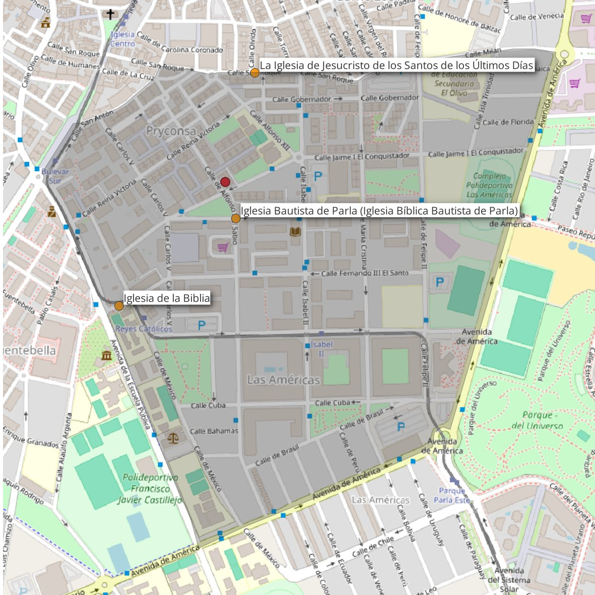
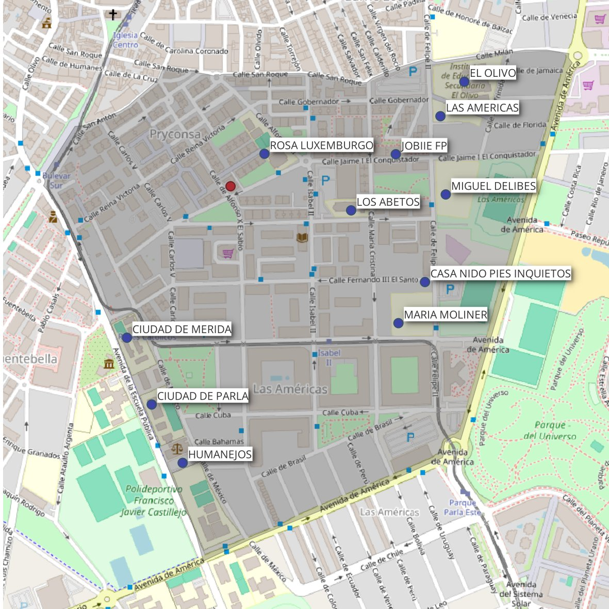

Puntos de interés en el territorio parroquial
Parroquia Cristo Liberador (Parla) · Arciprestazgo de Parla
Entidades religiosas no católicas

3 entidades religiosas no católicas en el territorio de la parroquia.
Evangélicos (2)
- Iglesia Bautista de Parla (Iglesia Bíblica Bautista de Parla)Calle Alfonso XIII 30 Local 30, Parla
- Iglesia de la BibliaCalle Fernando III El Santo 33 3º I, Parla
Iglesia de Jesucristo de los Santos de los Últimos Días (1)
- La Iglesia de Jesucristo de los Santos de los Últimos DíasCalle San Roque 8, Parla
Fuente: Registro de Entidades Religiosas del Ministerio de la Presidencia, Justicia y Relaciones con las Cortes. Situación en el mapa: dirección geocodificada con CartoCiudad (IGN) o Nominatim (OpenStreetMap).
Centros educativos

11 centros educativos en el territorio de la parroquia (público: 9, privado: 2).
| Centro | Tipo | Titularidad | Domicilio | Web |
|---|---|---|---|---|
| CASA NIDO PIES INQUIETOS | Escuela infantil privada | Privado | Calle Fernando III El Santo, 44, 28982 Parla | Página web |
| CIUDAD DE MERIDA | Colegio de educación infantil y primaria | Público | Avenida de la ESCUELA PÚBLICA, l11, 28981 Parla | Página web |
| CIUDAD DE PARLA | Colegio de educación infantil y primaria | Público | Avenida de la ESCUELA PÚBLICA, 15, 28982 Parla | Página web |
| EL OLIVO | Instituto de educación secundaria | Público | Calle Felipe II, 11, 28982 Parla | Página web |
| HUMANEJOS | Instituto de educación secundaria | Público | Avenida Juan Carlos I, 19, 28981 Parla | Página web |
| JOBIIE FP | Centro privado de formación profesional específica | Privado | Calle Jaime I El Conquistador, 57, 28982 Parla | Página web |
| LAS AMERICAS | Instituto de educación secundaria | Público | Calle Felipe II, 13, 28982 Parla | Página web |
| LOS ABETOS | Escuela infantil | Público | Calle Alfonso XIII, 29, 28982 Parla | Página web |
| MARIA MOLINER | Colegio de educación infantil y primaria | Público | Calle Reyes Católicos, 79, 28982 Parla | Página web |
| MIGUEL DELIBES | Colegio de educación infantil y primaria | Público | Calle Felipe II, 15, 28982 Parla | Página web |
| ROSA LUXEMBURGO | Colegio de educación infantil y primaria | Público | Calle Jaime I El Conquistador, 39- B, 28982 Parla | Página web |
Fuente: registro de centros educativos de la Comunidad de Madrid. Solo se recogen los centros en situación de alta.